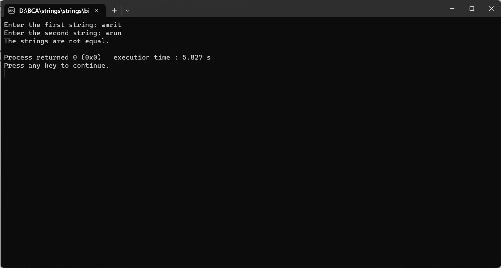

ENTER TWO STRINGS FROM USER AND COMPARE THOSE STRINGS THAT THEY ARE EQUAL OR NOT
#include
#include
int main() {
char firstString[1000];
char secondString[1000];
printf("Enter the first string: ");
fgets(firstString, sizeof(firstString), stdin);
printf("Enter the second string: ");
fgets(secondString, sizeof(secondString), stdin);
// Comparing the strings using strcmp
if (strcmp(firstString, secondString) == 0) {
printf("The strings are equal.\n");
} else {
printf("The strings are not equal.\n");
}
return 0;
}
